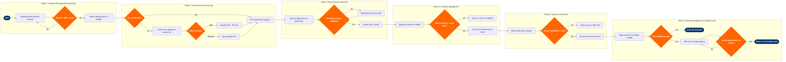

Component & Parts Management
Maintenance, Repair & Overhaul › Engine & Component Shop · 20 L4 steps · 6 phases · 8 decision gates · Updated 2026-03-19 18:32
📊
Process Flow Diagram (BPMN)

📋
L4 Process Steps
| Step | Step Name | Role / Swim Lane | System | Input | Output | KPI | Dec? | Exc? |
|---|---|---|---|---|---|---|---|---|
Phase 1 1.1 |
Generate parts demand forecast from maintenance programme | Materials Planning Analyst | AMOS by Swiss AviationSoftware | Approved maintenance programme, fleet utilisation plan, AD/SB list | 12-month rolling parts demand forecast by P/N | Forecast accuracy ≥85% (MAPE ≤15%) | N | N |
| 1.2 | Validate forecast against consumption history and ADs | Materials Planning Analyst | AMOS by Swiss AviationSoftware | 24-month parts consumption history, current AD/SB revision delta | Validated demand plan with confidence bands; exception list for manual override | Forecast review cycle completed within 5 business days | Y | N |
| 1.3 | Submit demand plan to procurement and finance for budget approval | Materials Planning Manager | SAP S/4HANA Finance (FI/CO) | Validated demand plan, prior-year actuals | Approved materials budget, MRP requirements released to procurement | Budget approval lead time ≤10 business days | N | N |
Phase 2 2.1 |
Check stock availability against net demand requirements | Materials Controller | AMOS by Swiss AviationSoftware | Approved demand plan, real-time inventory snapshot | Net requirements list with buy / borrow / exchange decisions per P/N | Stock-out rate ≤2% for critical AOG-flagged parts | Y | N |
| 2.2 | Source parts from approved vendor list via RFQ | Procurement Specialist | SAP Ariba | Net requirements list, approved vendor master, contract pricing | RFQ issued to ≥2 approved suppliers per part number | Vendor lead time compliance ≥90%; RFQ issued within 1 business day of requirement | N | Y |
| 2.3 | Evaluate supplier quotes and select preferred source | Procurement Specialist | SAP Ariba | Supplier quotes, cost and lead-time matrix, AOG flag | Awarded PO, supplier selection rationale documented | PO cycle time ≤3 business days (AOG: ≤4 hours) | Y | Y |
| 2.4 | Issue purchase order and confirm supplier delivery commitment | Procurement Manager | SAP S/4HANA Finance (FI/CO) | Awarded quote, budget confirmation, delivery address | PO issued with confirmed expected receipt date and freight tracking reference | PO-to-delivery on-time rate ≥88% | N | N |
Phase 3 3.1 |
Receive parts shipment and verify airworthiness documentation | Stores Receiving Inspector | AMOS by Swiss AviationSoftware | Inbound shipment, packing list, FAA 8130-3 or EASA Form 1 | Goods receipt logged in AMOS; documents scanned and attached to part record | Receiving processing time ≤4 hours for AOG-flagged parts; ≤24 hours for routine receipts | N | Y |
| 3.2 | Inspect parts for airworthiness and serviceable condition | Quality Inspector (Part 145 authorised) | AMOS by Swiss AviationSoftware | Physical part, airworthiness release certificate, inspection checklist | Inspection record; pass/fail determination recorded against part in AMOS | Inspection turn-time ≤8 hours; incoming rejection rate ≤3% | Y | Y |
| 3.3 | Quarantine non-conforming parts and raise supplier NCR | Quality Inspector | AMOS by Swiss AviationSoftware | Failed inspection record, non-conformance details | Quarantine tag applied, Non-Conformance Report raised, supplier notified | NCR resolution cycle ≤15 business days; quarantined parts segregated within 1 hour of rejection | N | Y |
Phase 4 4.1 |
Assign bin location and update AMOS inventory record | Stores Clerk | AMOS by Swiss AviationSoftware | Accepted and inspected part, warehouse bin map | Part binned, inventory record updated with location, quantity, and batch traceability | Inventory location accuracy ≥99.5%; bin assignment completed within 2 hours of acceptance | N | N |
| 4.2 | Monitor shelf-life, expiry dates, and life-limited part counters | Materials Controller | AMOS by Swiss AviationSoftware | Part life data, calendar expiry dates, flight-cycle counters from OEM CMM | Expiry alerts actioned; scrapping orders raised for time-expired or cycle-expired parts | Shelf-life compliance 100%; zero expired parts issued from serviceable stock | Y | Y |
| 4.3 | Conduct periodic cycle counts and reconcile inventory discrepancies | Stores Supervisor | AMOS by Swiss AviationSoftware | Cycle count schedule, physical count results, AMOS on-hand quantities | Reconciled inventory record; adjustment or write-off requests submitted to Finance | Inventory accuracy post-count ≥99%; cycle count variance ≤1% by value | N | N |
Phase 5 5.1 |
Receive and validate parts request from maintenance work order | Materials Controller | AMOS by Swiss AviationSoftware | Work order task card, illustrated parts catalogue reference, parts list | Validated picking list generated in AMOS; estimated staging time confirmed to technician | Parts picking initiated within 30 minutes of WO request submission | N | N |
| 5.2 | Kit and stage parts at work centre before task start | Stores Clerk | AMOS by Swiss AviationSoftware | Validated picking list, bin locations, task start time | Kitted parts trolley staged at work centre; all P/Ns and quantities verified | Kitting accuracy ≥99%; kit staged ≥1 hour before scheduled task start | Y | Y |
| 5.3 | Issue parts to technician and record WO consumption in AMOS | Stores Clerk | AMOS by Swiss AviationSoftware | Kitted parts, technician badge and signature, work order number | Parts issued; WO consumption record updated; removed serviceable/unserviceable parts tagged and returned to stores | Parts issuance documentation completeness 100%; removed parts tagged within 1 hour of removal | N | N |
Phase 6 6.1 |
Tag and track removed unserviceable rotable in AMOS | Maintenance Technician | AMOS by Swiss AviationSoftware | Removed component, completed work order removal record | Unserviceable tag applied; unit status set to U/S in AMOS rotable tracking module with part history appended | Rotable U/S tagging compliance 100%; AMOS update completed within 4 hours of removal | N | N |
| 6.2 | Assess repair viability against BER threshold | Component Engineering Manager | AMOS by Swiss AviationSoftware | Unserviceable rotable, OEM Component Maintenance Manual, preliminary repair cost estimate | Repair or BER decision documented; repair order raised in AMOS or scrapping order approved | BER rate ≤8% of annual rotable pool; average repair cost vs. new-unit cost ≤60% | Y | Y |
| 6.3 | Ship core to approved repair agency and track shop visit TAT | Rotables Controller | AMOS by Swiss AviationSoftware | Raised repair order, serviceable-to-repair shipping documentation, export/import permits | Core shipped with AMOS shop visit opened; TAT clock started; interim exchange unit sourced if required | Repair TAT ≤30 days for avionics LRUs; ≤60 days for engine accessory components | N | N |
| 6.4 | Receive repaired rotable and return to serviceable stock | Stores Receiving Inspector | AMOS by Swiss AviationSoftware | Repaired unit, MRO shop work order, EASA Form 1 or FAA 8130-3, updated part history | Rotable returned to serviceable stock in AMOS; shop visit closed; cost posted to SAP asset record | Rotable pool availability rate ≥92%; receiving and return-to-stock processing ≤4 hours | Y | Y |
📋